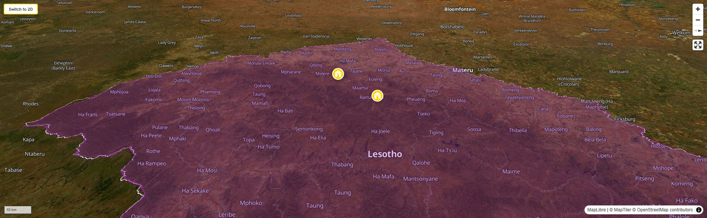

BackpackersBible.com
Lesotho

Lesotho is, statistically, a place of records. It is the only country in the world entirely enclosed within another country — a mountain kingdom completely surrounded by South Africa. It has the world's highest lowest point: the lowest elevation anywhere in Lesotho is 1,400 metres above sea level, higher than the summit of many European mountains. Most of the country sits at 2,000 metres or above. The highest peak, Thabana Ntlenyana, reaches 3,482 metres — the highest point in southern Africa. The air is thin and clear and cold for much of the year, and the light on the basalt mountains in the early morning is something that painters have never quite managed to capture.
From South Africa's lowveld or its coastal cities, the approach to Lesotho through one of the mountain passes — the Sani Pass in the Drakensberg rising from KwaZulu-Natal, or the various passes through the Maloti Mountains from the Free State — involves a physical ascent that feels like passing through a membrane. The density of the world below thins out. The vegetation changes. The landscape becomes spare and vast and the sky becomes enormous. And then you are in a different country entirely: a highland kingdom of stone villages, Basotho horsemen in blankets and conical grass hats, enormous skies, and a silence that you can hear.
Lesotho is not an easy destination. The roads — those that exist — are often rough, mountain passes can be impassable after winter snowfall, distances are deceptive in the highlands, and the services that backpackers take for granted elsewhere (ATMs, supermarkets, reliable phone signal) are sparse once you leave the capital Maseru. These are features rather than bugs. Lesotho rewards the traveller who comes prepared, with time, with a vehicle capable of handling gravel mountain roads, and with the patience to travel at the pace the landscape sets rather than the pace a schedule demands. It is one of the most extraordinary countries in southern Africa, and almost no one goes there.
To understand Lesotho — its existence as a sovereign country, its mountain geography as a deliberate political choice, its survival as a distinct nation through the most violent and turbulent period in southern African history — you have to understand Moshoeshoe I, the man who built it.
Moshoeshoe (pronounced approximately "Moshoo-shway," though the full pronunciation of the clicks that give his name its distinctive sound is something you'll learn better from a Mosotho person than from a phonetic guide) was born around 1786 in a small chieftaincy in what is now northern Lesotho. The southern Africa of his youth was entering a period of extraordinary turbulence: the Mfecane, a series of disruptions triggered by the rise of the Zulu kingdom under Shaka to the east, sent waves of displaced people cascading across the subcontinent as clans fled, were absorbed, or were destroyed by the expanding power of the Zulu state and the ripple effects it set in motion. At the same time, Boer settlers were expanding northward from the Cape Colony, and behind them the British imperial machinery was advancing with its own logic of land acquisition and control.
What Moshoeshoe did in this environment was extraordinary. Rather than meeting force with force — a strategy that had proved catastrophic for most of his neighbours — he combined military capability with a diplomatic intelligence and a quality of personal magnanimity that was genuinely rare in any era. He gathered displaced clans and defeated enemies around him not through conquest but through absorption, offering protection in exchange for allegiance and absorbing the people he defeated rather than destroying them. He built his mountain fortress at Thaba Bosiu — a flat-topped mesa whose cliffs and single narrow approaches made it effectively impregnable — and used it as the base from which his kingdom grew.
When the Boers attacked Thaba Bosiu, Moshoeshoe repelled them. When they attacked again, he repelled them again — and then, in a move of calculated brilliance, he sent cattle to the Boer commander as a gift, framing the gift as compensation for the losses the Boers had suffered in the attack, rather than as tribute from a defeated enemy. It was a gesture that defused the situation, preserved his dignity, and demonstrated an understanding of his opponents' psychology that was as effective as any military victory. When the British annexed his territory in 1868 — after decades of Boer encroachment had reduced his kingdom to a remnant of its former extent — he accepted British protection specifically to prevent the Boers from taking what remained. It was a strategic concession, not a capitulation: the British protectorate preserved the core of his kingdom, and when South Africa became the Union of South Africa in 1910, Lesotho (then Basutoland) remained a separate British territory rather than being absorbed. It achieved full independence in 1966.
Moshoeshoe died in 1870, having held together a nation through one of the most dangerous half-centuries in southern African history. His mountain kingdom survived. His people survived. The country that carries his legacy — landlocked within the country that tried to absorb it, with borders defined in large part by the mountain geography he deliberately chose as his base — is one of the more remarkable outcomes of 19th-century African political history. He is regarded throughout southern Africa as a statesman of the first rank, and the reverence with which his name is spoken in Lesotho today reflects not just historical admiration but a living sense of what was preserved.
The fabric you see everywhere in South Africa — the indigo-printed cotton with its distinctive geometric patterns, sold in bolts at every market from Cape Town to Durban, worn for weddings, ceremonies, and daily life across Sotho, Zulu, Xhosa, and Tswana communities — carries Moshoeshoe's name in it. In the 1840s, French missionaries from the Paris Evangelical Missionary Society gifted the king with bolts of indigo-dyed printed cotton — a European fabric of Dutch and German origins, made originally in Central Europe by a discharge printing technique that bleached intricate patterns onto pre-dyed cloth. Moshoeshoe was taken with the fabric and wore it, and because Moshoeshoe wore it, his people wanted it. The fabric spread through the Basotho nation and became known, after the king, as shoeshoe — which, over time, shifted into the spelling most commonly used today: shweshwe.
The German and Swiss settler communities who arrived in the Eastern Cape slightly later introduced the same fabric independently to the Xhosa people, which is why shweshwe is called ujamani — "the German" — in Xhosa. Two separate introduction points, two different naming traditions, the same cloth. Today shweshwe is manufactured exclusively by Da Gama Textiles in the Zwelitsha township outside King William's Town in the Eastern Cape — originally available only in indigo blue, now produced in a range of colours, still made to the same discharge-printing specification that gives the authentic fabric its distinctive stiff hand, its characteristic starchy smell when new, and its satisfying softening with the first wash. It has been called the denim of South Africa, or the tartan — a fabric that crosses ethnic and regional lines, that belongs to everyone who has claimed it, and that carries in its name the memory of a king who received it as a diplomatic gift and changed its history by choosing to wear it.
The Basotho — the people of Lesotho — are a Bantu-speaking people whose origins, like all southern African peoples, are layered with migrations and absorptions that played out over centuries. What is striking to many visitors, particularly in the highland areas of the country, is the evident diversity of physical appearance among Basotho people — a diversity that is, to an informed eye, part of a broader and fascinating story of population contact.
The San — the original inhabitants of southern Africa, the people whose extraordinary rock art covers thousands of cave sites from the Drakensberg to the Cederberg — were gradually displaced from the lowlands by the southward migration of Bantu-speaking agricultural peoples and, later, by the expansion of European settlement from the Cape. They retreated to the margins: the Kalahari in the west, the Drakensberg escarpment and the high mountain country that would become Lesotho in the east. The San communities of the KwaZulu-Natal midlands and Drakensberg foothills were squeezed further into the highlands by the expansion of the Zulu kingdom, the arrival of Boer settlers in the interior, and British colonial pressure from the coast. Some were absorbed into Basotho communities through intermarriage and coexistence rather than displacement; others retreated to the high mountain plateaux where the terrain made pursuit difficult.
The result is that Basotho people in the highland areas of Lesotho frequently show physical characteristics that reflect San ancestry — higher cheekbones, a particular quality of the eyes, a lighter skin tone than is typical of Bantu-speaking peoples further east. This is not an unusual phenomenon in human population history; it is what happens when peoples who have lived separately in the same landscape for long periods encounter each other and, over generations, become part of each other. It is worth noting not as an exoticising observation but as a piece of living population history — the faces of people in the Lesotho highlands carry, literally, the traces of multiple human stories that played out in these mountains over thousands of years. The San rock art that covers cave walls throughout the Drakensberg and into Lesotho is the other physical trace of that presence: paintings of extraordinary sophistication and beauty, left by people who lived in these mountains for millennia before anyone thought of drawing a border around them.
Lesotho is one of the most significant diamond-producing countries in the world, which surprises most visitors who associate African diamonds with South Africa or Botswana. The Letšeng Diamond Mine, operated in the Maluti Mountains at 3,200 metres above sea level, is the highest diamond mine on earth. At that altitude, in a cold mountain landscape of basalt and snow, miners extract kimberlite pipe ore that has produced some of the largest and most valuable diamonds ever found anywhere. The Lesotho Legend — 910 carats, recovered from Letšeng in 2018 — is the fifth-largest gem-quality diamond ever discovered. The Lesotho Promise (603 carats), the Letšeng Star (550 carats), and the Letšeng Legacy (493 carats) have all come from the same deposit. These are not industrial diamonds; they are Type IIa stones of exceptional clarity and size, among the rarest and most valuable diamonds that exist. The mine at 3,200 metres, in a country most people could not place on a map, quietly produces diamonds of world-historical significance.
Diamond revenue constitutes a significant portion of Lesotho's GDP, alongside the wages remitted by Basotho men working in South African mines — a pattern of labour migration that has shaped Lesotho's social and economic structure for over a century, taking men away from their highland villages for months or years at a time and creating a society in which women have historically managed the homestead, the land, and the community in their absence. The Basotho blanket — the thick, patterned woollen blanket worn by men and women across Lesotho, visible on every horseman you will pass on the mountain roads — is simultaneously a functional garment against the highland cold and a marker of Basotho identity, worn with the same unembarrassed pride in a mountain village as in the streets of Maseru.
By road from South Africa: Lesotho has more than a dozen border crossings with South Africa. The main ones for backpackers are:
Maseru Bridge — the principal crossing, on the N8 from Bloemfontein, open 24 hours. Maseru, the capital, is immediately beyond the crossing. Most travellers entering by road use this gate. The crossing is straightforward; queues are manageable on weekdays outside holiday periods.
Sani Pass (KwaZulu-Natal) — the most dramatic entry point, a 4x4-only gravel road climbing through the Drakensberg escarpment from the KZN side to the Lesotho highlands at 2,874 metres. Requires a high-clearance 4x4 — standard hire cars cannot manage it, and attempts in underpowered vehicles end badly. The drive up is extraordinary; the view from the top is one of the finest in southern Africa. The Sani Mountain Lodge at the top of the pass is, justifiably, famous.
Caledonspoort / Ficksburg Bridge — the main crossing from the Free State northeast of Maseru, open 24 hours. Convenient for travellers coming from the Drakensberg or the Clarens area.
Getting around: Lesotho requires its own transport. The paved road network is limited; the highland areas where the most interesting experiences are located — Malealea, Ramabanta, Semonkong — involve significant gravel mountain road driving. A high-clearance vehicle (though not necessarily 4x4 outside of Sani Pass and specific highland tracks) is strongly recommended. Standard sedan hire cars can reach Malealea and Ramabanta in dry conditions but should not be taken into the highlands after rain or snow. In winter, mountain passes can be snowbound and impassable for days. Check conditions before travel.
Minibus taxis connect Maseru with the main towns and serve as the primary public transport for Basotho people. They are usable by backpackers for the main routes; for reaching the lodges, the transport logistics require more planning. Malealea can be reached by taxi from Maseru via Mafeteng with a connection, but confirm current routing with the lodge before attempting it. Semonkong has a similar public transport option — ask Semonkong Lodge for current advice on reaching them without a hire car.
Money: The Lesotho loti (plural maloti) is pegged 1:1 to the South African rand, and rand is accepted at most tourist establishments. ATMs exist in Maseru and major towns; there are none in the remote highland areas. Bring sufficient cash — in both rand and maloti — before leaving the capital or border area. Card payment is possible at the main lodges but should not be relied upon as the only payment option in rural areas.
Malaria: No malaria risk anywhere in Lesotho. The entire country lies at altitude too high for the anopheles mosquito. No prophylaxis required.
No visa is required for most Western nationalities, Commonwealth citizens, and EU passport holders for stays up to 30 days. Your passport must be valid for at least 6 months beyond your intended stay. South African citizens enter visa-free. Verify your specific nationality's requirements before travel.
Cold in winter (June–August) — genuinely cold at altitude, with snow common on the highland plateau and temperatures dropping well below zero at night. Summer (November–March) is warmer but brings afternoon thunderstorms and the possibility of flash flooding in river valleys. The shoulder seasons — April–May and September–October — are the best for travel: mild temperatures, stable roads, and the mountain landscape in its clearest, most photogenic condition. September in particular, with the first spring flowers and snowmelt streams, is extraordinary. Whatever month you visit, bring layers — the temperature at 2,000+ metres can change dramatically over the course of a day.
By the standards of the region, Lesotho is a safe destination for tourists. The rural areas and highland villages are very safe; the mountain lodges described in this guide have good security records and well-established community relationships that provide additional social safety. Maseru, the capital, requires standard urban awareness — don't walk alone after dark in unfamiliar areas, keep valuables secured. The main safety considerations in Lesotho are environmental rather than criminal: mountain weather changes quickly, gravel roads deteriorate in rain, river crossings that were passable in the morning can be impassable after afternoon storms. Travel conservatively, don't take risks with weather or road conditions, and inform someone of your intended route and timing when travelling into remote highland areas.
The risks in Lesotho are primarily environmental. Here is what you actually need to know.
Mountain weather: At altitude, conditions can change within an hour. A clear morning can become a snowstorm by afternoon in winter, or a violent thunderstorm in summer. Always carry warm layers regardless of the morning temperature. If you are on a multi-day pony trek or hike and weather deteriorates, follow your guide's advice on shelter and timing without argument — they know these mountains in all conditions and you do not.
River crossings: The highland streams and rivers that cross mountain roads and pony tracks become dangerous very quickly after rain. What is a shallow ford in the morning can be an impassable torrent by afternoon after a thunderstorm upstream. Do not attempt river crossings in flood or near-flood conditions in a vehicle or on horseback. Wait. The water will drop within hours in most cases.
Altitude: Semonkong Lodge sits at 2,200 metres. The Sani Pass top is 2,874 metres. Some people experience mild altitude effects — headache, breathlessness, fatigue — at these elevations, particularly if they have come directly from sea level. Drink water, move slowly on the first day, and do not attempt vigorous physical activity immediately after arrival at high altitude. Serious altitude sickness is uncommon at Lesotho elevations but not impossible; descend and seek medical advice if symptoms are severe.
Road conditions: Gravel mountain roads in Lesotho can be excellent in dry conditions and treacherous after rain. A high-clearance vehicle is strongly recommended. Do not drive unfamiliar highland roads after dark. Carry a spare tyre — a puncture on a remote Lesotho mountain road with no spare is a serious problem that your phone may not be able to solve (signal is intermittent throughout the highlands).
The Basotho pony is the transport of the Lesotho highlands — a compact, sturdy, sure-footed animal bred over centuries for mountain conditions, capable of navigating the narrow rocky paths and steep passes that no vehicle can follow. Pony trekking in Lesotho is not a tourist attraction layered onto the landscape; it is the way the landscape has always been traversed, and travelling it on horseback gives you access to the parts of Lesotho that roads do not reach and to the village life that exists in those places.
Treks range from one-hour introductory rides to multi-day journeys of five or six days, sleeping in village rondavels, eating food prepared by village families, following passes and river valleys with a local guide who knows every stone of the route. No riding experience is required for most of the easier routes — the ponies are genuinely docile and the guides are experienced in managing first-time riders. For the multi-day treks, a basic level of fitness is more important than riding skill. The deeper you go into the highlands, the more extraordinary the landscape becomes and the more completely the rest of the world drops away. The sound on the second day of a mountain pony trek — hooves on stone, bells on grazing sheep, the wind across the plateau, nothing else — is one of the finest sounds available to a traveller anywhere on this continent.
The Maletsunyane Falls drop 204 metres into a basalt gorge near Semonkong — the highest single-drop waterfall in southern Africa, and, since 1996, the site of the Guinness World Record-holding longest commercially operated single-drop abseil on earth. Semonkong Lodge runs the abseil alongside the falls: you step backwards off the edge of the gorge at the top and descend the full face of the waterfall, rope in hand, with a 360-degree view of the gorge expanding around you as you go down, the water falling beside you, the pool far below growing slowly larger. The abseil takes between 45 minutes and two hours depending on experience level. No prior abseil experience is required — a practice abseil on a 25-metre cliff near the lodge is part of the preparation. What is required is a willingness to step off the edge of a 204-metre cliff, which is not nothing, but is one of the more remarkable available experiences on this planet and has a safety record to match its audacity.
The Sani Pass is a mountain road — and then, above a certain point, a mountain track — that climbs from the KwaZulu-Natal foothills into the Lesotho highlands through the Drakensberg escarpment, rising from approximately 1,550 metres at the South Africa border post to 2,874 metres at the Lesotho border post in roughly 9 kilometres of road. The gradient in the steepest section is 1 in 4. The surface is gravel and loose rock. Standard hire cars cannot do it. A high-clearance 4x4 in good condition can do it in fine weather with an experienced driver; in snow or ice, only the most capable vehicles and drivers should attempt it.
The drive up is extraordinary — the valley below opening behind you, the escarpment walls rising on both sides, the road switching back on itself repeatedly as it finds the only viable line through the terrain. At the top, the landscape changes completely: flat plateau, enormous sky, the first highland stone villages, horsemen in blankets moving across the skyline. The Sani Mountain Lodge at the top of the pass serves food and cold beer in what they describe, with reasonable accuracy, as the highest pub in Africa. Whether you are entering Lesotho via the Sani Pass or simply making a day trip from the KZN side, the drive is worth the effort and the vehicle hire premium. Tours from Underberg on the KZN side bring visitors to the top in guided 4x4s if you don't have your own vehicle.
The cave paintings left by San communities across the Drakensberg and into the Lesotho highlands are among the finest examples of rock art anywhere in the world — recognised as such by UNESCO, which inscribed the uKhahlamba-Drakensberg Park as a World Heritage Site specifically for the quality and quantity of its rock art. The paintings at sites accessible from Malealea — some dating back over 40,000 years — depict hunting scenes, trance visions, therianthropes (half-human, half-animal figures that appear in the shamanic cosmology of San spiritual practice), and the eland, the most sacred animal in the San universe. They are not cave drawings in the crude sense; they are sophisticated paintings in which the layering of images, the use of multiple pigments, and the specific iconography reflect a complex spiritual and cosmological worldview that researchers are still working to fully understand. Standing in a cave looking at a painting made by a person who stood in exactly the same spot 40,000 years ago, looking at the same mountains, is one of the more perspective-adjusting experiences available to a human being in 2026.
Thaba Bosiu — "the mountain that grows at night," so named because Moshoeshoe's enemies believed the mesa expanded in darkness to confuse attackers — is the flat-topped rocky fortress 25 kilometres east of Maseru where Moshoeshoe built his stronghold and defended his kingdom through decades of assault. The single viable approach to the summit is a narrow path between cliff faces that could be held by a small number of defenders against a much larger force. From the summit, you can see the site of battle, the graves of Moshoeshoe and his successors, and a view across the lowlands that explains immediately why he chose this place. It is one of the most significant historical sites in southern Africa and one of the least visited by international tourists. A guide is required for the summit approach; guides are available at the base. It is approximately 20 minutes from Ramabanta Trading Post.
Lesotho is one of the finest hiking destinations in southern Africa for those willing to manage the logistics. The Maluti Mountains offer trail routes from half-day walks out of the main lodges to multi-day cross-country routes that cover terrain seen by very few visitors. The landscape — high basalt plateau, deep river valleys, waterfalls, San rock art sites — is consistently dramatic. Guided hiking is available from all three lodges in this guide; Malealea in particular has an extensive network of trails to waterfalls and San art sites, ranging from one to six days. There are no maintained formal trails in the sense that European or North American hikers expect; you walk with a local guide who knows the land. This is part of the experience rather than a limitation.
Semonkong Lodge offers a donkey pub crawl — a guided tour of the village's traditional beer-brewing homes and local shebeens, conducted on the back of a donkey, with stops for Basotho sorghum beer and encounters with village music and dance along the way. It is, by all accounts, an experience that defies straightforward description and is almost universally described in reviews as one of the highlights of Lesotho. The sorghum beer (joala) is an acquired taste; the donkeys are phlegmatic; the welcome in the village homes is genuine. This is not a performance staged for tourists. It is a walk through a village's actual social life, on the back of a donkey, which is exactly what the name suggests.
The mountain landscape itself: Free. The views from any highland road in Lesotho — plateau to the horizon, basalt peaks, river valleys dropping away below road level, stone villages scattered across the hillsides — are free and extraordinary. Drive slowly. Stop often.
Thaba Bosiu: Low cost, guided. The most significant historical site in Lesotho and one of the most important in southern Africa. The guide fee is nominal.
Walking from the lodges: All three lodges offer self-guided walking in their immediate surroundings at low or no additional cost. The Malealea valley in the early morning light, the Maletsunyane River gorge below Semonkong, the Makhaleng Valley from Ramabanta's clifftop — all are free to walk with basic orientation from the lodge reception.
Village interaction: Lesotho is a country where the most memorable moments are often unplanned — a conversation with a herder on a mountain path, being invited to watch a wedding ceremony in a roadside village, a group of children who want to practise their English on a passing stranger. None of this costs anything and all of it is specific to Lesotho in a way that no paid activity can quite replicate.
Stars: Free, and specifically worth mentioning. At 2,000+ metres, with no light pollution for kilometres in every direction, the night sky over the Lesotho highlands is one of the finest visible to a traveller anywhere on this continent. On a clear winter night at Malealea or Semonkong, the Milky Way is not a faint suggestion but a solid structure overhead, and the Southern Cross is directly above you at a latitude where it is properly visible. Bring a sleeping bag and lie on your back on the lodge lawn for an hour before sleeping. This is the correct use of a night in the Lesotho highlands.
Full contact details are included in case you want to book direct, plus useful info such as Safety Ratings and Value For Money, Solo Female Friendliness, and Digital Nomad scorecards.
Every listing below is independently researched and unsponsored. We review them all the same way -
the hostels do not pay us for advertising.
Did we miss a hostel? Email us at and we'll add it.
AREA: WESTERN HIGHLANDS — Mafeteng District, 60km south of Maseru
STREET ADDRESS: 1 Main Road, Nr Matelile, Malealea, Mafeteng District, Lesotho
GOOGLE MAPS: -29.82799, 27.59992
PHONE: +266 5883 9646 (Lesotho number) / +27 82 552 4215 (South African number)
WHATSAPP: 266 5323 0295 (Lesotho) / +27 82 552 4215 (South Africa)
EMAIL: info@malealealodge.com
WEBSITE: malealealodge.com
SOCIAL: Facebook
ACCOMMODATION TYPE: Backpacker rondavels (shared facilities), en-suite rondavels, family rondavels, camping. 90-bed capacity. Solar-powered.
PRICE RANGE: Budget. Backpacker rondavels from approximately R300 per person; en-suite rondavels from R900; camping from R165 per person (2 adults). Pony treks and activities priced separately — ask for current rate card.
GOOGLE RATING: ~4.5 / 5
BOOKING.COM RATING: ~8.6 / 10 ("Fabulous")
TRIPADVISOR: Consistently ranked #1 accommodation in Lesotho.
VALUE FOR MONEY RATING: 5 / 5. Malealea is one of the most remarkable value propositions anywhere on the southern African backpacker circuit. For the price of a standard city hostel dorm, you get a rondavel in a mountain valley in Lesotho, access to a network of hiking, pony trekking, and mountain biking trails that reach San rock art, waterfalls, and villages that no road connects, a local band playing traditional music in the evenings with home-made instruments, and the institutional knowledge of a lodge that has been operating for nearly 40 years and has built genuine deep relationships with the surrounding community. The Malealea Development Trust — a community development organisation headquartered on the lodge property — represents a level of community investment that is exceptional even among the better ethical tourism operations in southern Africa. The value here is not just in what the accommodation costs; it is in what the whole experience provides.
VIBE-METER: 60% Mountain Kingdom Immersion / 25% Community-Connected Cultural Experience / 15% Outdoor Adventure Base. Malealea is not a party lodge or a transit stop. It is a destination. Guests come here specifically to be here — to trek, to walk, to sit by the fire listening to Basotho music in the evening, to go into the mountains for multiple days and come back changed by what they've seen. The lodge attracts a thoughtful, curious, outdoors-oriented demographic. The relationship between the lodge and the surrounding community — decades in the building — gives every interaction an authenticity that purely commercial tourism cannot manufacture.
DECIBEL LEVEL: 1 / 5. You will hear birds. You will hear the wind. In the evening, you will hear the lodge's resident musical group. At night, you will hear what the Lesotho highland darkness sounds like, which is one of the better sounds available. This is correct.
KEY AMENITIES: Full pony trekking centre (one hour to six days, all abilities), mountain bike hire, guided hiking to rock art and waterfalls, village walks, cultural experiences, communal kitchen, restaurant (set meal times — book in advance), bar, campfire area, solar power, Wi-Fi (slow — for communication, not streaming), safe vehicle storage, Malealea Development Trust on-site. The lodge can arrange a local Vodacom Lesotho SIM card for guests arriving without adequate data.
DIRECTIONS NOTE: The last 7km to Malealea is gravel road. From Maseru drive 60km south; from Mafeteng drive 26km north. Turn at the Matelile/Qaba signpost at Motsekuoa taxi corner. Drive 10km, fork right, drive 15km, turn left over the Gates of Paradise Pass for the last 7km. Standard hire cars can manage in dry conditions; not recommended after rain or snow. Allow considerably more than 7km of time for the gravel section — the road is rough and the views require stopping.
NEARBY HIGHLIGHTS: San rock art sites (multiple, accessible on foot and by pony — some of the finest accessible rock art in Lesotho), Ribaneng Falls (2-3 hour hike), the Gates of Paradise Pass (the entrance to the valley itself, with one of the finest views in Lesotho immediately accessible from the lodge), village walks to the surrounding Basotho communities. Multi-day pony treks can reach Semonkong and the Maletsunyane Falls in 3 days — the most spectacular way to travel between the two lodges.
SOLO FEMALE FRIENDLINESS: 5 / 5. Malealea is the top recommendation for solo female travellers in Lesotho. The lodge's deep community relationships mean that every guided walk, trek, and village visit is conducted within a framework of genuine mutual trust between the lodge and the surrounding community. The environment is safe, the staff culture is warm and family-oriented (the lodge has been run by the same family for nearly 40 years and the general manager has grown up with the staff), and multiple solo female reviewers describe it as one of the safest and most welcoming environments they have encountered anywhere on their travels. The cultural richness of the experience adds a layer of meaningfulness that makes solo travel here particularly rewarding.
DIGITAL NOMAD FRIENDLINESS: 0 / 5. Wi-Fi exists for basic communication. There is no electricity at the camping sites; the rondavels have limited power access. The lodge's solar system provides light and some charging. You are in the Lesotho highlands. Put the laptop away and go on a pony trek. The internet will still be there when you come back.
SAFETY RATING: GREEN. The Malealea valley and the surrounding community are extremely safe for visitors. The lodge's four decades of operation reflect a stable, well-managed environment with consistently positive safety records. Mountain safety precautions apply for all trekking and hiking — go with a guide, carry water and warm layers, inform the lodge of your intended route and return time. The pony trek guides are experienced in mountain conditions and carry the knowledge to keep you safe on multi-day routes.
MANAGEMENT STYLE: Family-operated, generationally invested. Mick Jones built Malealea Lodge from a trading post with a few beds into a 90-bed solar-powered community lodge that has been ranked the best accommodation in Lesotho for years. Mick passed away in 2020; the next generation — Glenn Jones, Jackie and Helgard Muller — continue the operation alongside General Manager Koali (Bob) Mohali and the long-tenured team. The continuity of management and staff is visible in every aspect of the operation: the staff know the guests, the guides know the trails, the community knows the lodge. This is not a corporate hospitality product; it is a place that has been built and maintained with genuine personal investment over a very long time.
EMPLOYMENT ETHICS: OUTSTANDING. The Malealea Development Trust, headquartered on lodge property, funds community infrastructure projects — roads, schools, clinics — in a region where government services are limited and access is difficult. The lodge employs staff from the surrounding community, pays above minimum wage, and has maintained employment stability through the difficult post-COVID period that forced many smaller lodges to close. The pony trekking operation specifically employs local guides and sources horses and overnight accommodation from village families along the routes — a distribution of tourism income that reaches people who would not otherwise participate in the tourism economy. This is among the most ethically managed operations in this guide.
THE BLURB: There is a plaque at the mountain pass through which you enter the Malealea valley. It was placed by the Englishman who created the trading post that eventually became this lodge, in the early 20th century, and it reads: "Wayfarer, pause and look upon a gateway of Paradise." It is, by the standards of tourist hyperbole, an understatement. The valley below the pass — the rondavels of the lodge scattered across the hillside, the mountains rising on three sides, the stone pathways leading toward rock art and waterfalls and village life that the road has never reached — is one of those places that resets your sense of what travel can do when it is done well. Malealea does not show you Lesotho. It gives it to you, slowly, over several days, on the back of a pony named Rothmans or Rasta or something equally improbable, clip-clopping across a mountain path while the world you came from becomes genuinely hard to remember. Book multiple nights. You will extend your stay.
FINAL VERDICT: The finest backpacker lodge in Lesotho, and one of the finest in southern Africa. Go for two nights. Stay for five. Book the multi-day pony trek. Ranked #1 accommodation in Lesotho on Tripadvisor for good reason.
AREA: CENTRAL HIGHLANDS — A5 mountain road, 70km from Maseru
STREET ADDRESS: A3 Road, Ramabanta, Maseru District, Lesotho
GPS: -29.66628, 27.79663
PHONE: +266 5844 2309 / +266 2234 0202
WHATSAPP: +266 5844 2309
EMAIL: tradingpostram@leo.co.ls
WEBSITE: ramabanta.com
SOCIAL: Facebook
ACCOMMODATION TYPE: Superior en-suite rooms, standard en-suite rooms, budget en-suite rooms, backpacker dorm (sleeps 6), camping. Total 19 rooms. Perched on a cliff edge overlooking the Makhaleng River Valley.
PRICE RANGE: Budget to mid-range. Backpacker dorm from approximately R200–R280 per person; budget rooms from R550; superior rooms from R950. Camping available.
GOOGLE RATING: ~4.5 / 5
BOOKING.COM RATING: ~8.5 / 10 ("Very Good")
TRIPADVISOR RATING: ~4.5 / 5 — consistently praised for food, setting, and staff warmth.
VALUE FOR MONEY RATING: 5 / 5. Ramabanta sits on a cliff edge overlooking the Makhaleng River Valley — a view that would justify significantly higher prices than it charges. The accommodation is genuinely comfortable, the home-cooked food is consistently praised in reviews as one of the highlights of any Lesotho trip, and the location on the A5 mountain road makes it the natural overnight stop between Maseru and Semonkong. The history of the place adds another layer: the Thorn family established the first trading post here in the early 1900s, and the fifth generation now runs the lodge in partnership with the McCarthy family — a continuity of presence in this specific valley that is almost without parallel in Lesotho tourism. Budget travellers get an en-suite backpacker room with those valley views for dorm-adjacent prices. The value is exceptional.
VIBE-METER: 40% Historic Lodge Character / 30% Adventure Base / 20% Passing-Through Stop / 10% Enduro and 4x4 Culture. Ramabanta has two distinct guest demographics: travellers making the Maseru-to-Semonkong route who stop for a night, and adventure sports enthusiasts who come specifically for the off-road biking. Ramabanta is a key stop on the Roof of Africa — the annual enduro motorcycle race that covers some of the most challenging mountain terrain in southern Africa — and the lodge has deep roots in the off-road community. The two demographics coexist comfortably; the lodge is large enough that the bikers and the backpackers don't occupy the same space unless they want to.
DECIBEL LEVEL: 2 / 5. Quiet in the standard sense; livelier during Roof of Africa weekend and other enduro events when the lodge fills with motorbike culture. Avoid the lodge on these specific weekends if that's not your scene — check the Roof of Africa dates before booking.
KEY AMENITIES: Cliff-edge dining veranda with Makhaleng River Valley views (one of the finest dining views in Lesotho), bar, home-cooked meals (breakfast and dinner included in most room rates; packed lunches available), pony trekking, hiking trails, 4x4 trails, enduro and mountain bike trails, cultural village visits, San bushman art sites (30 minutes), dinosaur footprints (20 minutes' walk), Thaba Bosiu (20 minutes by car), Wi-Fi, secure parking, laundry.
HISTORICAL NOTE: The first John Thorn (known to the Basotho as "Baseane") established the Roma Trading Post in 1903, expanding his trading network to Ramabanta and several other highland villages. Trading posts like this were the commercial and social infrastructure of highland Lesotho for the first half of the 20th century — procurement points for wool, mohair, and cattle; distribution points for goods the Basotho needed from the outside world; post offices; clinics; grain mills. The traders who ran them were, by most accounts, deeply embedded in Basotho community life in a way that distinguished them from extractive commercial relationships elsewhere in colonial Africa. The fifth generation of the Thorn family, co-operating now with the McCarthy family, runs the lodge with the same community orientation. The history of the place is present in its bones.
NEARBY HIGHLIGHTS: Thaba Bosiu — Moshoeshoe's mountain fortress (20 minutes by car — the most important historical site in Lesotho, and almost never visited by international tourists despite being easily accessible from Ramabanta), dinosaur footprints (20 minutes on foot — Lesotho has some of the most abundant early dinosaur trackways in the world, left in the Triassic mudflats that are now highland basalt), San bushman rock art (30 minutes — multiple sites of significant quality), Maletsunyane Falls and Semonkong Lodge (approximately 3 hours further on the A5).
SOLO FEMALE FRIENDLINESS: 4 / 5. Ramabanta is a warm, family-run operation in a safe rural area. The cliff-edge setting and the communal dining culture create a natural social environment in which solo travellers — female or otherwise — are absorbed into the guest community rather than left to fend for themselves. The meals, served at communal tables, are a particular social asset: you will know everyone at the lodge by the end of dinner. Reviews from solo female travellers are consistently positive. Standard mountain safety precautions apply for any off-property activity.
DIGITAL NOMAD FRIENDLINESS: 2 / 5. Wi-Fi available. The A5 road location means connectivity is better here than at Malealea or Semonkong. The veranda with the valley view is an excellent place to work with modest bandwidth requirements. Not suitable for high-demand remote work.
SAFETY RATING: GREEN. Rural highland Lesotho, safe community, well-managed property. Mountain safety precautions apply as across the highlands. The cliff-edge location that makes the views extraordinary also means that guests should exercise care near the property's outer edges, particularly after dark.
MANAGEMENT STYLE: Fifth-generation family operation, co-managed with the McCarthy family. The depth of relationship between the Thorn family and the Ramabanta community — stretching back over a century — gives the lodge an authenticity and rootedness that no newly established tourism property can manufacture. Reviews consistently praise the owners' personal warmth and the staff's genuine helpfulness. The food — home-cooked, generous, specific to the highland larder — is mentioned in nearly every positive review.
EMPLOYMENT ETHICS: POSITIVE. Long-established community employer. The lodge's road-building programmes — using food-for-work principles, in partnership with the World Food Programme during famine periods — reflect a degree of community investment that goes well beyond employment. Local staff. Long-tenured team. No volunteer-for-accommodation model. The trading post history that underpins the lodge is a record of commercial engagement with the Basotho community that has, by the accounts of those who have studied it, been genuinely reciprocal.
THE BLURB: Ramabanta Trading Post is perched on a cliff edge overlooking a river valley in the Maluti Mountains, run by the fifth generation of the family that has been in this specific valley since 1903, serving home-cooked food that reviewers describe as among the best they have eaten in Lesotho, twenty minutes from Thaba Bosiu, the fortress from which Moshoeshoe held off the British Empire. If you are driving the A5 from Maseru to Semonkong, stop here for the night. The veranda view at sunset, the communal dinner, the morning light on the valley before you drive further into the mountains — this is Lesotho working as it should, and the lodge that makes it accessible has been doing exactly this for longer than most backpacker lodges have existed.
FINAL VERDICT: The finest overnight stop on the Maseru–Semonkong route and one of the most historically rooted lodges in Lesotho. The cliff-edge view, the home-cooked food, and the proximity to Thaba Bosiu make this essential. Book dinner in advance.
AREA: SEMONKONG — Central Highlands, 115km southeast of Maseru at 2,200m elevation
STREET ADDRESS: 1 Riverside Road, Semonkong, Maseru District, Lesotho
GPS: -29.84301, 28.04366
PHONE: +266 5888 1021
WHATSAPP: +266 5888 1021
EMAIL: info@semonkonglodge.com
WEBSITE: semonkonglodge.com
SOCIAL: Facebook
ACCOMMODATION TYPE: En-suite rooms, rondavels (7, on the upper terrace with river and mountain views), backpacker dorm, camping. Built entirely from local stone and thatch. On the banks of the Maletsunyane River.
PRICE RANGE: Mid-range. Backpacker dorm from approximately R250–R350 per person; rondavels from R900–R1,400; camping from R180 per person. Abseil priced separately — check current rates on the website.
GOOGLE RATING: ~4.5 / 5
BOOKING.COM RATING: ~8.4 / 10 ("Very Good")
TRIPADVISOR RATING: ~4.5 / 5 — most reviewed lodge in Lesotho.
VALUE FOR MONEY RATING: 4 / 5. Semonkong Lodge is the most expensive of the three lodges in this guide, reflecting its remoteness (the logistics of operating at 2,200m, 115km from Maseru, cost money) and the extraordinary activities on offer. The 204m abseil down the Maletsunyane Falls — a Guinness World Record — is priced at a premium that is entirely justified by what it is: stepping backwards off the edge of a 204-metre cliff over Africa's highest single-drop waterfall is not an experience with many price comparators. For the rondavels, the combination of stone-and-thatch construction, river views, mountain backdrop, roaring fireplace in winter, and the Duck and Donkey Tavern's food and company represents strong value at the price charged. The backpacker dorm is an affordable entry point if the abseil is your priority and the accommodation is secondary.
VIBE-METER: 40% Adrenaline and Adventure / 30% Genuine Highland Remoteness / 20% Fly Fishing and Outdoor Sports / 10% Traveller Pit Stop. Semonkong has two distinct characters that coexist: the adventure destination (people who have come specifically to abseil, or to pony trek, or to fish the Maletsunyane River) and the end-of-the-road remoteness that the location embodies (people who have driven as far as the A5 road goes and found themselves in the most beautiful and most isolated place they have been). The Duck and Donkey Tavern — the stone-and-thatch bar where both demographics meet in the evenings — is one of the great backpacker bar experiences in southern Africa: roaring fire, cold beer, altitude, and the sound of the Maletsunyane River below.
DECIBEL LEVEL: 2 / 5. The Maletsunyane River. The wind. The fire in the Duck and Donkey. Occasionally, the distant sound of someone who has just abseiled 204 metres and is still processing what happened to them. This is the correct noise profile for a lodge at 2,200 metres at the end of a mountain road in the Lesotho highlands.
KEY AMENITIES: World record 204m abseil (Guinness certified — longest commercially operated single-drop abseil on earth), Basotho pony trekking (one hour to multi-day, with the option of completing the route to Malealea in 3 days), mountain biking, fly fishing (brown trout, rainbow trout, and endemic Maluti minnow — 'grand slam' fishing trips available), donkey pub crawl through the village, Duck and Donkey Tavern and Restaurant, communal fireplace, Wi-Fi, generator power (limited hours), card payment accepted.
THE ABSEIL IN DETAIL: The Maletsunyane Falls drop 192–204 metres (sources vary slightly — the abseil rope runs 204m) into a basalt gorge. The abseil operation runs alongside the falls from the rim of the gorge. A training abseil on a 25m cliff near the lodge precedes the main descent. Guides manage the full descent, which takes 45 minutes to 2 hours depending on experience and pace. You descend beside falling water in a 360-degree gorge view that expands as you go down. No prior abseil experience required. Physical prerequisites: reasonable fitness and the capacity to manage heights. The Semonkong guides are experienced, professional, and have operated this route since 1996. The safety record over those decades is the clearest possible endorsement of the operation's standards.
NEARBY HIGHLIGHTS: Maletsunyane Falls (walk from the lodge, free to view from the rim — the abseil is optional and separately priced), the village of Semonkong for the donkey pub crawl, multi-day pony treks toward Malealea (3 days — the finest overland route between the two lodges), the Lesotho Highland Water Project (the system of dams and tunnels that transfers Lesotho's mountain water to South Africa's industrial heartland — the Katse Dam, visible on a day drive north, is an engineering project of extraordinary scale).
SOLO FEMALE FRIENDLINESS: 4 / 5. Semonkong Lodge is welcoming and professionally managed. The adventure activities — particularly the abseil — are gender-neutral environments where experience level is the only variable that matters. Solo female travellers in reviews describe the lodge positively, with specific mentions of the staff's warmth and the sense of security that comes from a well-managed operation in a very remote location. The remoteness itself is the one consideration: Semonkong is 115km from Maseru on mountain roads, and the village has no meaningful infrastructure outside the lodge. For a solo female traveller, the lodge itself is the social and safety environment — which it provides well, but it should be understood as self-contained.
DIGITAL NOMAD FRIENDLINESS: 0 / 5. Generator power for limited hours. Wi-Fi present but intermittent. You are at 2,200 metres, 115km from Maseru, at the end of a mountain road. There is no correct use of a laptop here except to write about what just happened to you on the abseil.
SAFETY RATING: GREEN / additional notes for the adventure activities. The lodge and village are safe. The abseil has a Guinness-certified safety record and professional operation. The pony treks require standard mountain safety awareness. The Maletsunyane River — which runs directly below the lodge — is beautiful and powerful; do not swim in it or approach the bank in flood. The road to Semonkong on the A5 is manageable in dry conditions in a high-clearance vehicle; in wet or snowy conditions it becomes significantly more demanding. Do not attempt the drive at night.
MANAGEMENT STYLE: Family-owned, professionally operated. The lodge has been in continuous operation since the 1990s, building a reputation for the abseil and the pony treks that has made it the most reviewed accommodation in Lesotho. The management invests in safety infrastructure and guide training to a standard that the Guinness certification reflects. The Duck and Donkey Tavern is run with genuine hospitality — the food is described in reviews as "world renowned" and the portions as generously Lesotho rather than minimally tourist.
EMPLOYMENT ETHICS: POSITIVE. Community-embedded employer in the village of Semonkong. The pony trek operation sources horses, guides, and overnight accommodation from village families along the routes, distributing tourism income into remote communities that have no other access to the tourism economy. Long-tenured staff. No adverse employment reports.
THE BLURB: Semonkong means "the place of smoke" — named for the haze of mist that rises from the Maletsunyane Falls as the water drops 204 metres into the basalt gorge below. You can see that haze from the lodge terrace. You can abseil down inside it. The Duck and Donkey Tavern, built of local stone with a fire that has been burning since the night someone first understood that 2,200 metres required a serious fireplace, is where you have a beer afterward and recalibrate your sense of what is possible. The rondavels look over the river. The pony trek can take you to Malealea in three days across country that no road reaches. The donkey pub crawl is exactly what it sounds like. Semonkong is, in the best possible sense, the end of the road — and it is exactly the right place to be when you arrive there.
FINAL VERDICT: The most dramatic lodge in Lesotho. Home of the world's longest commercial abseil, the finest pony trekking routes in the highlands, and the Duck and Donkey Tavern. Book the abseil. Book a rondavel with river view. Stay at least two nights.
This guide uses cookies to improve your experience and keep it free. Read our Cookie Policy.

Welcome to our backpacking guide of South Africa!
Discover more